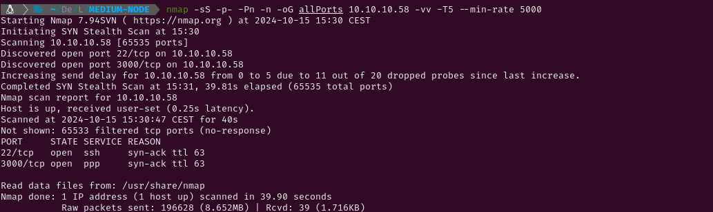
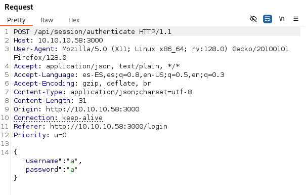

MEDIUM-NODE
1. Recon
Nmap
nmap finds two open ports: SSH (22) and ppp (3000).

The NSE (Nmap Scripting Engine) finds the following information:
- The box is using Ubuntu.
- The version of the SSH service is 7.2p2
- The port 3000 is a HTTP server which is using Apache Hadoop.

Website - TCP 3000
The website is for a project of a social media platform to meet new people.

I will run gobuster to find hidden directories and/or files but very few results are shown and all of them redirect to the main page. Using burpsuite to see how the POST request of the login functionality looked like I have found that the website is using an API. Once again, I’m running gobuster to scan the API.



After a few seconds, the file users is found and opening it prints a JSON with some usernames and hashed passwords. One of the usernames is an admin (myP14ceAdm1nAcc0uNT). Using CrackStation to try cracking the hashes results in three passwords show as clear text.


2. Gaining Access
After logging in succesfully using the username myP14ceAdm1nAcc0uNT and the password manchester, another page with a button to download a backup appears. After pressing the button the download of a file called myplace.backup starts and using cat to print its content I find it is a base64 encoded string.


I use base64 and file to decode it and try finding out which kind of file it is. It is a zip file so I try decompressing it, but a password is needed to do so. I will use zip2john and john to try cracking the password needed to decompress the file. I will use john and zip2john to break the hash and unzip the compressed file. In a few seconds the plain text password is found (magicword) and now I can access the content of the compressed file.


The first lines of the file app.js contain the credentials of the MongoDB database (mark:5AYRft73VtFpc84k) which can also be used to log in through SSH to the system as the user mark.


3. Privilege Escalation
Tom
After some reconnaisance within the system, I have listed existing SUID binaries and I have found one which I had never seen before (/usr/local/bin/backup). It belongs to root but the members of the group admin can execute it with root permissions. The members of that group are tom and root, so I probably have to get access to tom's account to escalate privileges.


Checking the processes running in the system that belong to tom, a node service running /var/scheduler/app.js is listed. Using nano to see its content, I can see a function which connects to a MongoDB collection called tasks and executes (as tom) whichever is inside doc.cmd.


I will connect to the database schedulers to see its content and try to insert a cmd element with a reverse shell to gain access as tom. Listing the existing elements in tasks shows nothing so the collection is empty. Inserting a new element results in the spawn of a shell in my netcat listener as the user tom.


Root
I am going to start trying to get root privileges by exploring the SUID binary I found that I can now execute. Running it with no arguments doesn’t do anything apparently. Same happens running it with one or two arguments. However, using three arguments prints an ASCII art. Using ltrace I can see what the ELF is doing. The first thing it does is comparing the first argument with the string ‘-q’.


Running the executable file using ‘-q’ as the first argument does not print anything so I can conclude the first argument is made to use a quiet mode which doesn’t print the ASCII image.

Using ltrace again to see what the binary does I can see that it is opening a file called keys located in /etc/myplace. Opening it I can see there are three strings written inside. After opening the file, the second argument is compared with every key contained in /etc/myplace/keys. As 2 is not equal to any of those keys, the program stops, so I am going to try using one of the found keys as the second argument.


ltrace now shows that one of the three keys was needed for the binary to continue running, but now the third argument is being compared to a bunch of strings. Those strings are directories and characters that can be used to navigate through the files of the system so I guess the third argument needs a route to a file/directory.

Running backup with the third argument being ‘/tmp’ prints a base64 code which after being decoded happens to be a zip file. Decompressing it creates a folder with the contents of the /tmp folder. So this binary returns a base64 encoded backup for the specified folder.


Knowing this I will try to create a backup of the root directory, but as I have seen that the third argument is compared to ‘/root’ and other ways to navigate to it, I can imagine that it won’t work. The binary prints a base64 code but the first thing I notice after trying to decompress it with unzip is that it throws an error and skips root.txt. Using 7z (the password is the one we found out earlier) works but printing the uncompressed file will show a trollface.


As I had imagined, I have to find the way to create a backup of the root folder using a string that the strstr, strcmp and strch functions of the binary won’t detect. One of the strstr functions compare the third argument witth ‘/root’, but moving to / will allow me not to write the slash character and still be able to navigate to the root directory. Once the backup is created I can decompress it, read the root.txt file and submit the flag.


Although the flag is submited, I can’t execute commands. To achieve this, I will test the backup binary to see if I can achieve a buffer overflow and spawn a shell as root. Earlier, when I was using ltrace to see what the binary was executing, I saw a strcpy function. This function is often vulnerable to this kind of exploits so I will start trying with the third parameter. Executing the binary with ten thousand ‘A’s as the third parameter will result in a segmentation fault error. This is what I was looking for.

Using gdb ./backup I can see what are the values for each memory register after a segmentation fault. Running r 1 a01a6aa5aaf1d7729f35c8278daae30f8a988257144c003f8b12c5aec39bc508 $(python3 -c 'print("A"*3000)') will result in filling the eip with ‘AAAA’.

I will use the pattern function of gdb to find how many A’s are required to start filling the eip. It seems that 512 characters are needed to fill the eip


The type of buffer overflow I am going to attempt is called return2libc. To do this I need the memory direction of libc, system, exit y /bin/sh. I will start getting the offset of libc. For this I have ran the command that prints it a couple times and I can see that it is not always the same so it is a dynamic offset. As this is a 32 bit system the memory direction is very short so it is likely that when I run a command which gets the offset of libc a thousand times, I get the same direction a bunch of times. This is happening correctly so the buffer overflow can be performed.


Now I need the system and exit offsets. Those are easy to get running a couple commands. The exit offset is 0x000237b0 and the system offset is 0x0003a940. Finding the /bin/sh offset takes just a command. It is 0x0015900b.


Using a quick python script I can print a payload that spawns a shell with root permissions. Now I will run the binary a thousand times (the libc memory direction is dynamic so there has to be an execution where the offset written is the script is the same than the offset of the current execution). At some point a root shell will spawn and the machine will be compromised.